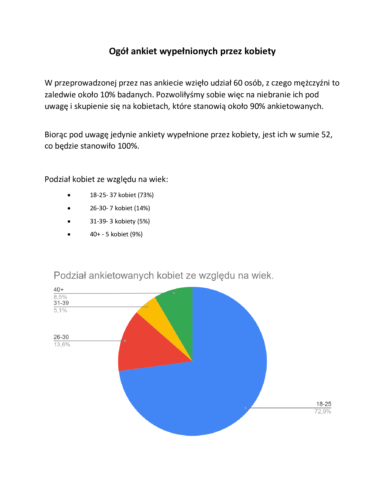
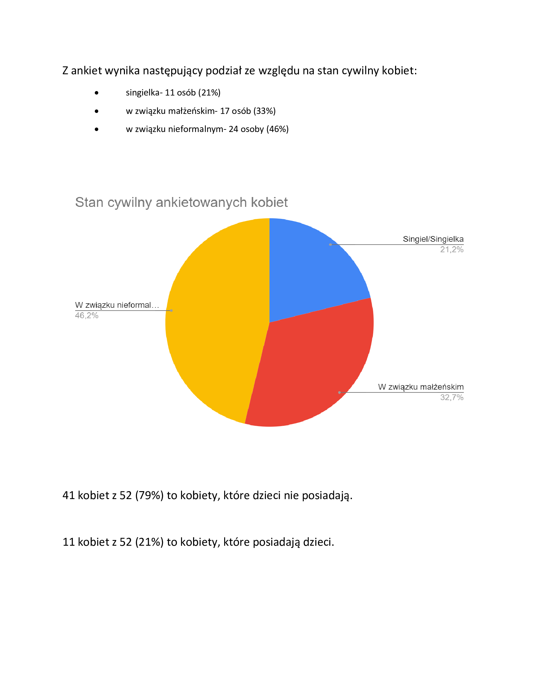
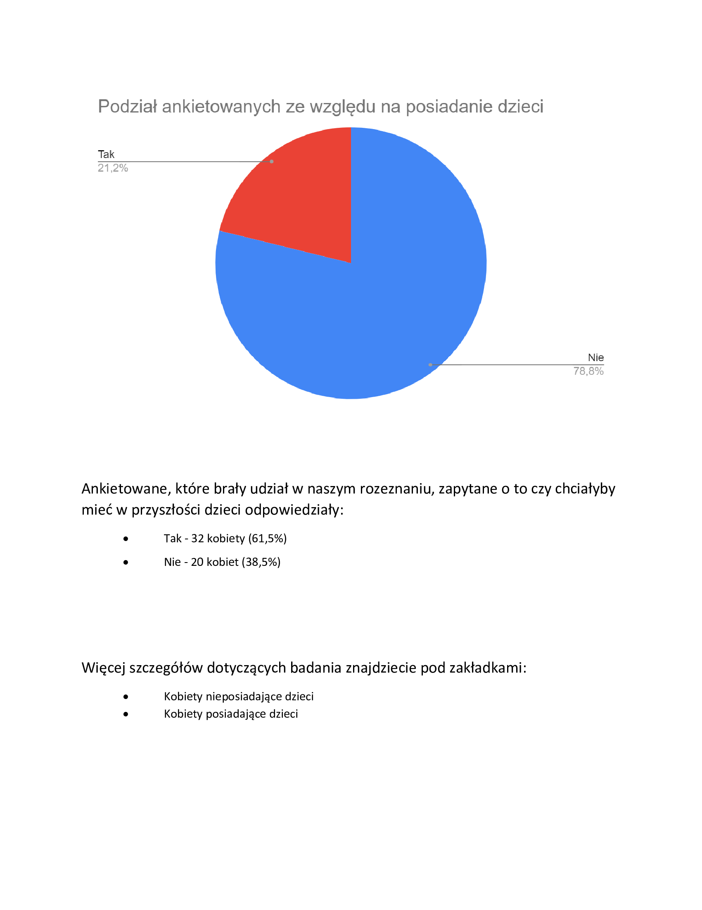
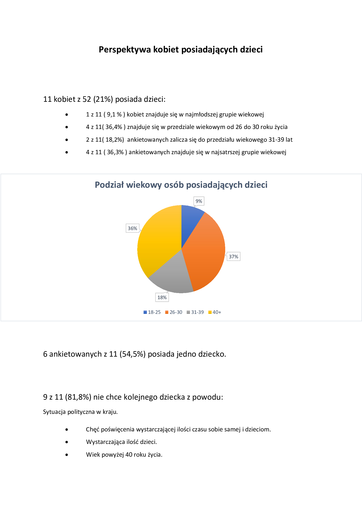
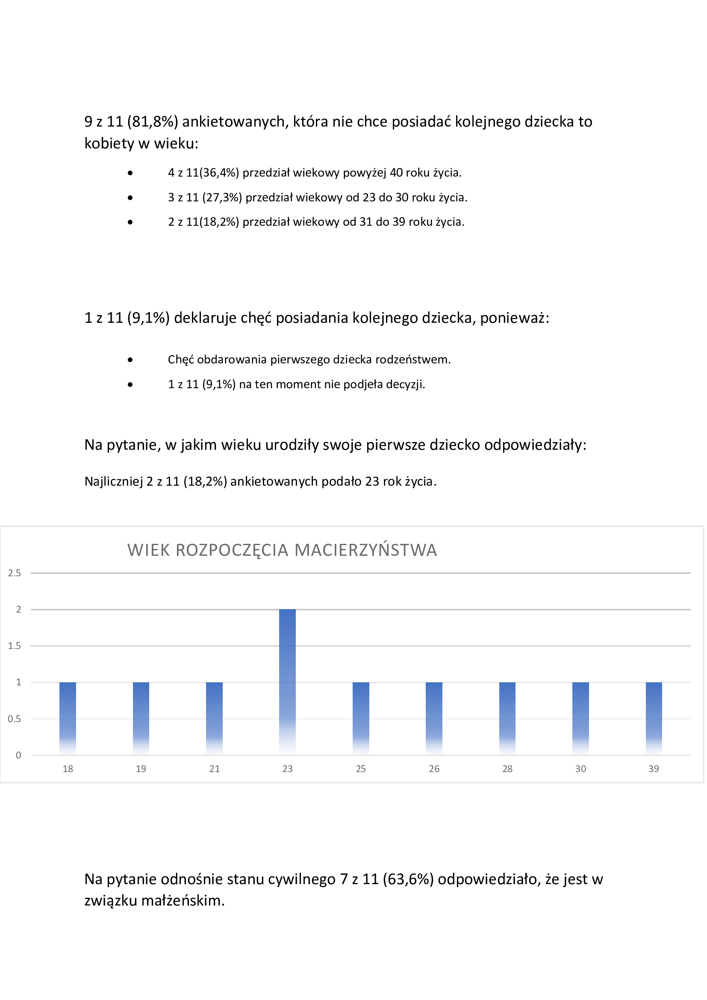
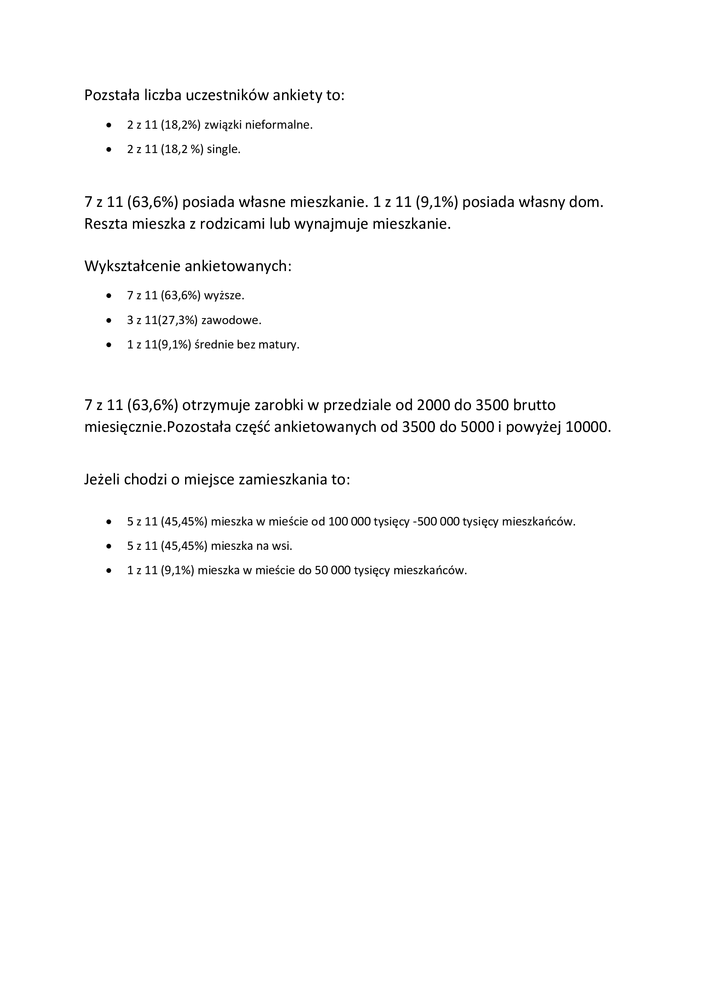
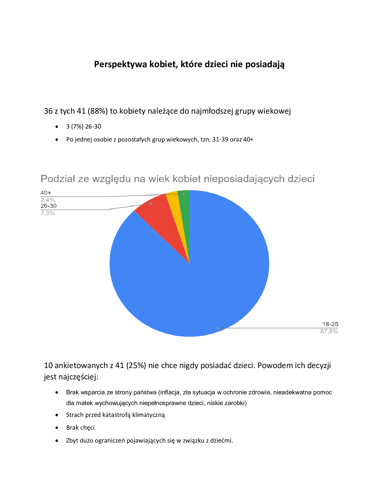
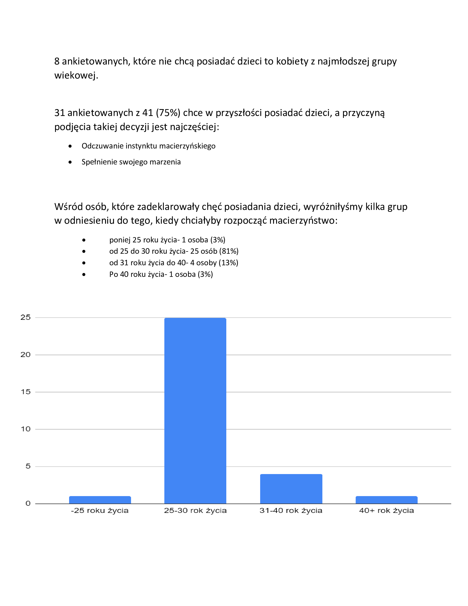
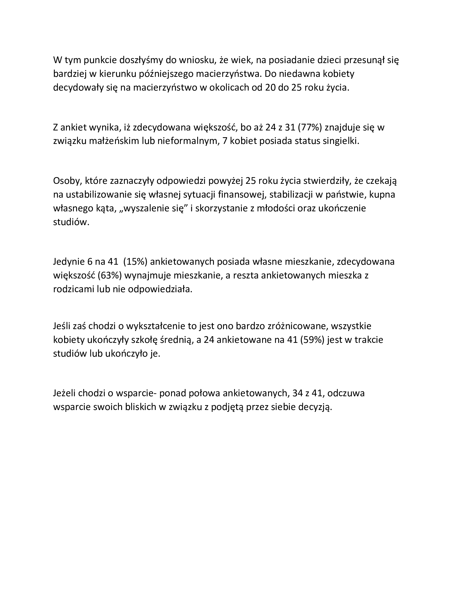

Nasze obserwacje
Z naszych obserwacji wynika, że przeobrażenia społeczno-kulturowe i ekonomiczne powiązane między innymi z procesami globalizacji, urbanizacji i industrializacji wpływają na kształt i funkcjonowanie współczesnej rodziny, a tym samym także na decyzje o macierzyństwie. Zmienia się pojęcie rodziny, przechodząc stopniowo od wspólnoty dużej, wielorodzinnej, wielopokoleniowej, patriarchalnej i trwałej do rodziny małej, małodzietnej, dwupokoleniowej, partnerskiej i nietrwałej, samodzielnej i niezależnej od rodziny pochodzenia. Na decyzje o macierzyństwie wpływa szereg czynników, którym pierwotne determinanty jak uczucia romantyczne obecnie mocno ustępują miejsca. Wśród tych czynników jest m.in.: grupa społeczna, wykształcenie, status ekonomiczny, czynniki fizjologiczne itp. Aby omówić autentyczność naszych obserwacji przedstawimy wyniki przeprowadzonego badania ankietowego, ale zanim do tego przejdziemy…
Ankieta
Pytania zawarte w ankiecie prócz standardowej metryki (płeć, wiek) dotyczyły miejsca zamieszkania, wykształcenia, statusu materialnego, obecnej sytuacji posiadania dzieci oraz chęci posiadania dzieci w przyszłości, a także czynników wpływających na te decyzje. Otrzymane wyniki pozwoliły nam wysnuć następujące wnioski:
        